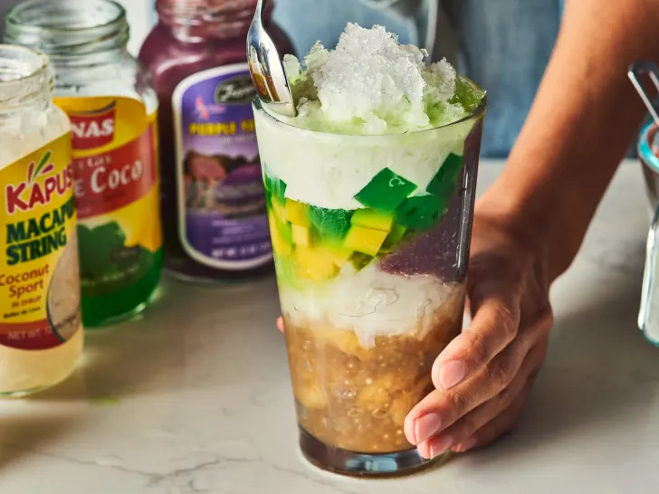

Halo-Halo

Description
Halo-halo is a popular dessert in the Philippines that’s a combination of shaved ice layered with a variety of different ingredients: tropical fruits, ice cream, gelatin-based candies made from coconut water, and so much more. The frosty treat is the perfect antidote to the hot, humid weather.
Ingredients
- Minatamis na saging
- Macapuno
- Milk mixture
- Ube halaya
- Coconut ice cream
- Jackfruit
- Nata de coco
Steps
- Cook the tapioca (optional). Bring a medium saucepan of water to a boil over medium-high heat. Add 1/4 cup small tapioca pearls, stir to combine, and reduce the heat to maintain a simmer. Simmer until the tapioca is al dente (translucent with small white centers), about 7 to 8 minutes. Drain through a fine-mesh strainer.
- Slice the bananas. Peel and slice 3 saba or 2 regular bananas crosswise into 1/4-inch-thick rounds.
- Make the syrup. Place 1 cup water, 3/4 cup packed light brown sugar, and 1/4 teaspoon kosher salt in a large saucepan. Stir and bring to a boil over medium-high heat. Reduce the heat to maintain a simmer and cook for 5 minutes.
- Add the bananas. Add the bananas and bring to a boil. Reduce the heat to maintain a low simmer and cook until tender and translucent, about 5 minutes.
- Add the tapioca. Add 1/4 teaspoon vanilla extract and tapioca if using, and stir to combine, breaking up any clumps. Transfer to a medium bowl and let cool to room temperature. Cover and refrigerate until cold, about 2 hours.
- Cut the jackfruit. Remove the jackfruit from a 20-ounce can, leaving the syrup behind. Coarsely chop the jackfruit into bite-sized pieces. Return the jackfruit back to the can.
- Make the milk mixture. Place 2/3 cup coconut milk, 3 tablespoons evaporated milk, and 3 tablespoons sweetened condensed milk in a small bowl or liquid measuring cup and stir to combine.
- Assemble the halo-halo. For each serving, layer the ingredients in a 16-ounce glass in the following order: 1/3 cup minatamis na saging, 1 scoop coconut or ube ice cream, 2 tablespoons macapuno, 2 tablespoons ube halaya, 1/4 cup jackfruit and syrup, and 1/3 cup coco de nata. Top with 1 cup shaved ice and drizzle with 3 tablespoons of the milk mixture. Add more shaved ice to fill the glass if needed.
- Serve and enjoy. Serve with a long spoon and mix it all up before eating.
Home